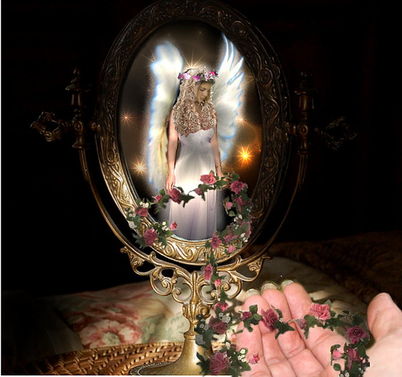

Putri Bluebell dan Cermin Ajaib

Dahulu kala, ada seorang putri kecil bernama Bluebell. Putri Bluebell tinggal di sebuah negara yang sangat, sangat jauh. Putri Bluebell adalah putri kecil yang sangat baik, tetapi dia memiliki satu kesedihan besar di hatinya. Dia selalu takut karena merasa bukan seorang putri sejati. Mungkin bisa dikatakan bahwa dia tidak benar-benar seperti yang disebut kerajaan, tetapi bagi ibu dan ayahnya serta semua hewan kecil yang tinggal di rumahnya, dia tentu saja adalah seorang putri sejati.
Putri Bluebell melihat dirinya di cermin setiap malam dan berkata, "Aku tidak merasa seperti seorang putri sejati. Dan aku tidak percaya bahwa aku ini seorang putri. Rambutku tidak cukup berwarna emas, wajahku tidak cukup cerah, dan mataku terlalu redup." Putri Bluebell merasa bahwa semua putri sejati seharusnya terlihat seperti yang ada di buku dongengnya. Dia berpikir bahwa para putri dalam buku dongengnya begitu cantik!
Setiap hari Putri Bluebell merasa sedikit lebih sedih, dan segera semua orang di rumahnya merasakan kesedihannya. Ibu nya berhenti bernyanyi di dapur; ayahnya memiliki kerutan khawatir di antara alisnya, dan semua hewan-hewan: kelinci putih kecil, anjing hitam, dan kuda poni di kandang mulai merundukkan kepala, bahkan mereka merasa sangat sedih untuk sang putri. Putri Bluebell berhenti mengenakan gaun cantiknya dan menyisir rambut cokelat kenyalnya yang indah, dan kilau dari matanya kehilangan cemerlangnya.
Suatu hari terjadi sesuatu yang aneh. Ada ketukan singkat di pintu. Putri Bluebell datang untuk membuka pintu, tetapi dengan kejutannya dia melihat bahwa tidak ada yang ada di sana. Dia hampir menutup pintu lagi, ketika dia melihat sebuah paket kecil yang dibungkus kertas kado perak dan emas. Dia mengambil paket itu dan membaca label hadiah yang terikat dengan pita merah muda di paket: Untuk Putri Bluebell, tertulis. Sekarang ini sungguh aneh, karena hanya ibu dan ayah Putri Bluebell dan hewan-hewan yang tahu bahwa dia adalah Putri Bluebell.
Putri kecil itu membawa paket itu ke kamarnya dan membukanya. Di dalamnya ada sebuah cermin cantik! Bingkainya dicat emas dan ada malaikat kecil berwarna emas duduk di sisi bingkai. Dia memiliki senyum yang sangat menyenangkan dan damai, dan matanya tampak bersinar dengan kasih sayang. Putri Bluebell sangat menyukai cermin itu. Dia melepas cermin lama dan menggantinya dengan cermin emas yang baru.
Malam itu, saat Putri Bluebell akan tidur, dia melihat ke cermin seperti biasa untuk melihat apakah dia sudah menjadi cantik seperti putri sejati. Putri kecil itu menutup matanya dan berkata pada dirinya sendiri, "Aku ingin menjadi cantik seperti putri sejati." Lalu dia membuka matanya dan melihat ke cermin emas yang baru.
Pertama-tama tidak ada yang terjadi, dia hanya melihat wajahnya yang normal memandanginya. Tetapi tiba-tiba refleksi cermin mulai berubah! Wajahnya menghilang, dan warna-warna yang indah mulai menari di dalam cermin. Ini hanya berlangsung beberapa detik, dan kemudian berubah lagi, sekarang dia bisa melihat dirinya sendiri, bukan hanya pantulan wajahnya, tetapi dia bisa melihat dirinya memberi makan hewan-hewan, mengelus mereka, dan menyanyikan lagu untuk mereka, membantu ibunya di dapur, mencuci piring dan memotong sayuran, membaca untuk ayahnya dan mengelus pipi kasar besar ayahnya.
Tiba-tiba, seorang malaikat muncul di cermin, sangat mirip dengan malaikat yang duduk di bingkai cermin.
"Ini adalah cermin ajaib," kata malaikat itu, "ini menunjukkan siapa kita di dalam, bukan di luar, karena siapa kita di dalam yang membuat kita cantik. Jiwa yang indah akan bersinar di dunia ini, itulah yang akan membuatmu cantik. Dan kamu cantik, putri kecilku. Dan jika kamu percaya bahwa kamu adalah seorang putri, maka kamu benar-benar adalah seorang putri sejati, mungkin bahkan lebih dari seseorang yang baru saja mewarisi gelar. Jadi percayalah pada dirimu sendiri, gadis kecil, percayalah bahwa kamu adalah seorang putri cantik, dan maka itu akan menjadi kenyataan."
Malaikat itu menghilang secepat muncul, dan kemudian cermin ajaib itu kembali seperti biasa. Putri Bluebell bisa lagi melihat pantulan wajahnya, tetapi sekarang terlihat berbeda. Matanya terlihat seperti bersinar, dan putri kecil itu bisa melihat bahwa rambut cokelat kenyalnya benar-benar indah dan berkilau, dan wajahnya bersinar seperti emas!
Malaikat kecil di sisi cermin itu memandanginya dengan mata damai dan penuh kasih sayang, dan seolah-olah malaikat itu tersenyum dengan sangat cerah. Putri kecil itu tersenyum balik. Dia sekarang tahu apa kecantikan sejati itu dan bahwa dia memang cantik. "Aku percaya," kata putri kecil itu pada gadis di cermin, yang tentu saja adalah dirinya sendiri, dan saat dia mengucapkan kata-kata itu, dia bisa merasakan di dalam dirinya bahwa dia adalah seorang putri sejati.
Sejak hari itu, Putri Bluebell kembali bahagia, dan itu membuat ayahnya, ibunya, dan semua hewan bahagia juga! Putri kecil itu tidak pernah lagi meragukan dirinya sendiri, dan jika dia melakukannya, yang harus dia lakukan hanya melihat ke dalam cermin ajaib dan keyakinannya akan pulih. Tidakkah baik jika kita semua memiliki cermin